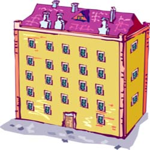

سرايداري
ماده 34- با توجه به قرارگرفتن سوئيت سرايداري در طبقه منهاي يك ساختمان، به انتخاب مدير شخصي ذي صلاح بر اساس اين مقررات به عنوان مستاجر سوئيت مذكور انتخاب شده، با وي قرارداد اجاره تنظيم مي شود. مابازاي اجاره ماهيانه،ايشان متعهد مي گردد به عنوان سرايدار خدمات مصرّح در اين مقررات را انجام دهد.
ماده 35- صلاحيتهاي عمومي سرايدار به شرح زير است:
الف-مرد، متاهل با حداكثر يك فرزند يا درصورت تجرّد بالاي 50 سال و كمتر از 60 سال سن.
ب- عدم اعتياد به مواد مخدر و عدم استعمال دخانيات.
ج- عدم سوء پيشينه كيفري.
د- سلامت جسمي و رواني.
ه- توانايي معرفي ضامن معتبر و ارائه چك بانكي جهت تضمين تخليه ملك.
ماده 36- وظايف سرايدار به شرح زير است:
الف- نگهباني از ساختمان و مراقبت در حفظ امنيت ساختمان و واحدها.
ب- نظافت راهروها و پله ها، لابي، پاركينگها، آسانسور،پشت بام، محوطه بيروني ساختمان و كليه مشاعات عمومي ساختمان.
ج- برف روبي حياط، راه عبوري پاركينگها و محوطه بيروني ساختمان در فصول سرد سال.
د- آبياري باغچه ها و مراقبت از فضاي سبز ساختمان.
ه- مراقبت از آسانسور ، تاسيسات گرمايشي و برقي و تجهيزات ساختمان.
و- جمع آوري كيسه زباله ساكنين از درب منازل در ساعت مشخص شده توسط مدير.
ز- اجراي دستورات مديرساختمان.
ماده 37- سرايدار مكلّف است در ايام تعطيلات خصوصاً تعطيلات عيد نوروز به صورت تمام وقت در ساختمان حاضر بوده و نگهباني از ساختمان را بر عهده گيرد.
ماده 38- سرايدار مجاز به سكني دادن افرادي غير از افراد ذكر شده در قرارداد اجاره نمي باشد.
ماده 39- سرايدار مجاز خواهد بود با هماهنگي و موافقت مدير در سال حداكثر به مدت ده روز و با معرفي فرد جايگزين به مرخصي برود.
ماده 40- مدّت قرارداد اجاره سرايدار سه ماه بوده كه در صورت رضايت مدير و ساكنين از عملكرد سرايدار براي دوره هاي سه ماهه، توسط مدير قابل تمديد مي باشد.
ماده 41- هر ساله در مجمع مبلغي جهت تقدير از زحمات سرايدار مشخص مي شود كه در صورت رضايت مدير از عملكرد سرايدار به صورت ماهانه و از محل شارژ قابل پرداخت خواهد بود.
ماده 42- انجام فعاليتهاي شغلي سرايدار و حضور و غياب وي در ساختمان بايد با مدير هماهنگ شده به گونه اي كه لطمه اي به وظايف مندرج در ماده 36 وارد نشود.
ماده 43- انجام امور شخصي ساكنين جزء وظايف سرايدار نبوده و واگذاري امورشخصي ساكنين به سرايدار از قبيل نظافت منزل، نظافت اتومبيل، خريد و كمك در جابجايي وسائل و نظاير آن به شرط آنكه خدشه اي به وظايف اصلي سرايدار وارد نكند و با توافق في مابين طرفين جهت جبران زحمات سرايدار بلامانع خواهد بود.
ماده 44- سرايدار متعّهد مي گردد در صورت عدم رضايت مدير از عملكرد وي حداكثر ظرف مدّت 15 روز نسبت به تخليه سوئيت سرايداري اقدام نمايد در غير اين صورت موضوع از طريق مراجع قانوني و نيز به اجرا گذاشتن چك تضمين پي گيري خواهد شد.
ماده 45- سوئيت سرايداري جزء مشاعات ساختمان بوده و تغيير كاربري آن به منظوري غير از سكونت سرايدار تنها منوط به اجماع تمامي مالكين ساختمان خواهد بود.
ماده 46- سرايدار مكلّف به رعايت مفاد اين مقرارت ، دستورات مدير و شئون اخلاقي و عرفي ساكنين ساختمان بوده و در صورت تخلّف از اين موارد،متناسب با موضوع جريمه اي توسط مدير براي وي درنظر گرفته خواهد شد.
بازگشت
رودروایسی ممنوع

درست یادم هست روزی که یکی از ساکنین واحدهای آپارتمان وقتی کیسه زباله اش را بیرون می برد آب از زیر نایلون زباله اش چکه می کرد، به نحوی که موجب کثیفی کف آپارتمان می شد. در دلم گفتم بهتر است به او تذکری بدهم شاید این کارش را تکرار نکند. ولی متاسفانه نتوانستم بنابر رودروایسی که با ایشان داشتم این کار را انجام دهم. چند هفته ای گذشت و بنابر تصادف من باز هم این صحنه را از همین همسایه دیدم ولی این بار با تمام اراده سعی نمودم به او تذکر دهم و با کمال ادب به او گفتم: ببخشید آقای رسولی بهتر نیست که نایلون زباله تان را بعد از درآوردن از سطل آشغال، در نایلون دیگر هم جاسازی کنید تا آب کثیف از زیر آن چکه نکند. و او هم که متوجه این خطایش شده بود با خجالت گفت: بله، خیلی معذرت می خواهم تا به حال متوجه این قضیه نشده بودم، از راهنمایی شما سپاسگذارم
بازگشت
قانون آپارتمان نشینی

همانگونه که همه ما می دانیم برای انسجام نظم در یک حوزه، محله و آپارتمان و سایر موارد جمعی بایستی قانونی تنظیم گردد که همه انسانها بتوانند زیر چتر حمایت این قانون نسبت به آرامش و امنیت جمعی برسند، از مسائل بسیار مهمی که انسان امروزه را بیشتر درگیر نموده و موجب گلایه و ناراحتی ساکنین آن شده است عدم رعایت مسائل مربوط به قوانین و فرهنگ آپارتمان نشینی است. بر این اساس در دهه 40 که تعداد آپارتمان نشینی از تعداد انگشتان دست فراتر نمی رفت، قانونگذار بنا بر ضرورت و پیشگیری از تبعات آتی این نوع از سکونت
ها اقدام به تدوین قانونی به نام قانون تملک آپارتمان نشینی نموده و آیین نامه آن را در سال 1343 اجرایی کرده است.
بازگشت